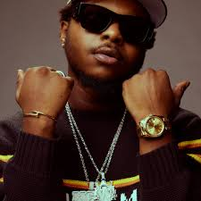
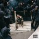

Leto
Rap
Leto, de son vrai nom Henoc Pierrick Bofenda, est un rappeur français né en 1997 à Paris. Il commence sa carrière avec le groupe PSO Thug avant de se lancer dans une carrière solo. Son style est principalement influencé par la trap et le rap moderne. Parmi ses principaux projets figurent Trap$tar, 100 Visages, 17% et Capitaine fait de l'oseille.
Discographie

100 Visages (2020)
Best track: Macaroni

17% (2021)
Best track: Mapessa

Jusqu'aux Etoiles (2022, avec Guy2Bezbar)
Best track: a completer

Capitaine fait de l'art (2024)
Best track: a completer

LIFE (2025)
Best track: a completer